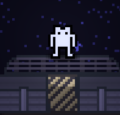

Space-Game

WIP 2D space game
- First attempt at full project in the Godot Engine.
- All art and programming done by myself.
I am currently a Computer Science Major at Michigan State University in my senior year. Growing up, I really enjoyed the process of creating something through code, which led me to pursuing software as a career. A majority of my experience is in programming in Python and C++, with a focus on software engineering. Occasionally, I develop games as a hobby and as a chance to broaden and improve my programming and design skills, and as a creative outlet for my ideas.
For two years I have been a computer assembler working with many different clients. I gained alot of experience working with operating systems and software, as well as troubleshooting hardware problems. Working with clients and the other employees also provided insight into the more professional business aspect of the tech industry.

WIP 2D space game
Recreation of the core NES CPU instructions
louckset@msu.edu